The model was built from measurements extracted from the architect's drawing set and cross-checked against the Revit DWG. Every window and door position, width, sill and head traces back to a sheet, and every check below ran automatically and passed.
Final render. Native 1920×1080, 16 samples, denoised (a compressed copy plays here; the full-quality
file is deliverables/video/nomt-walkthrough.mp4). It shows all four sides, the south wing's "open book" LED screen,
four flats (A, B, C, D) and the typical-floor cutaway.
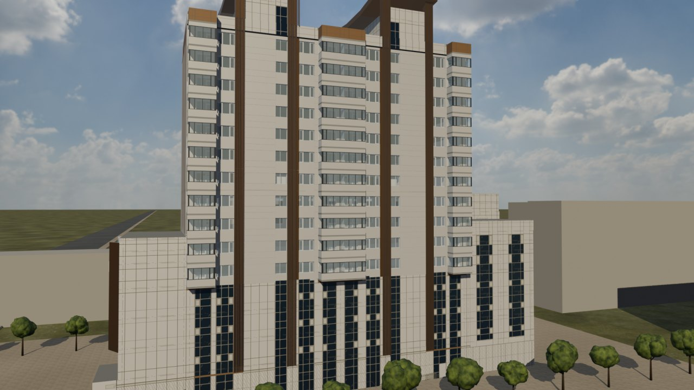
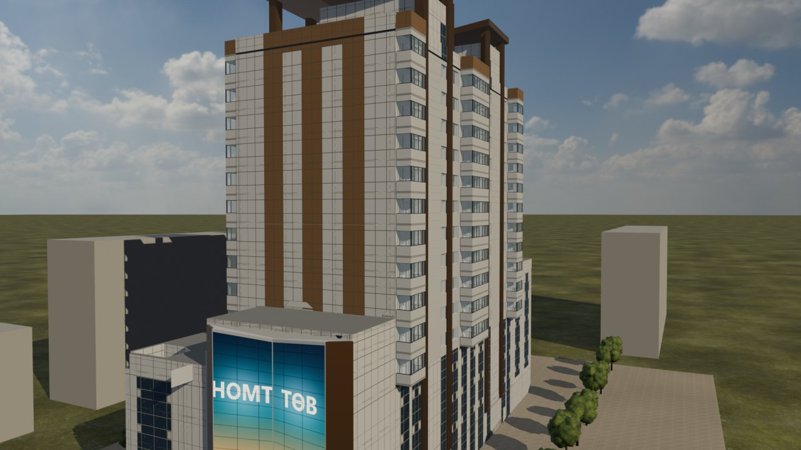
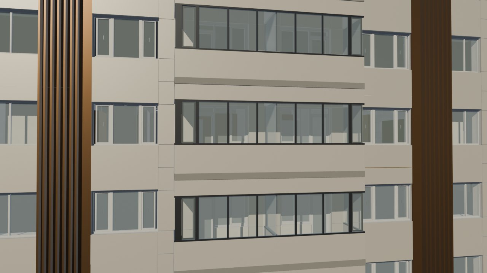
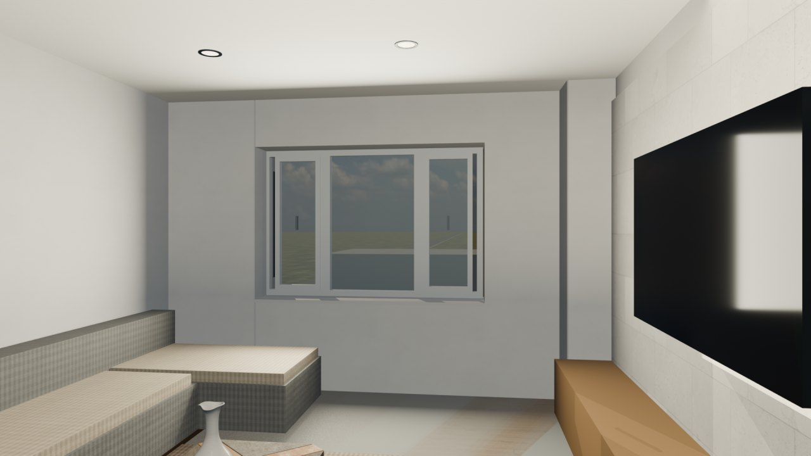
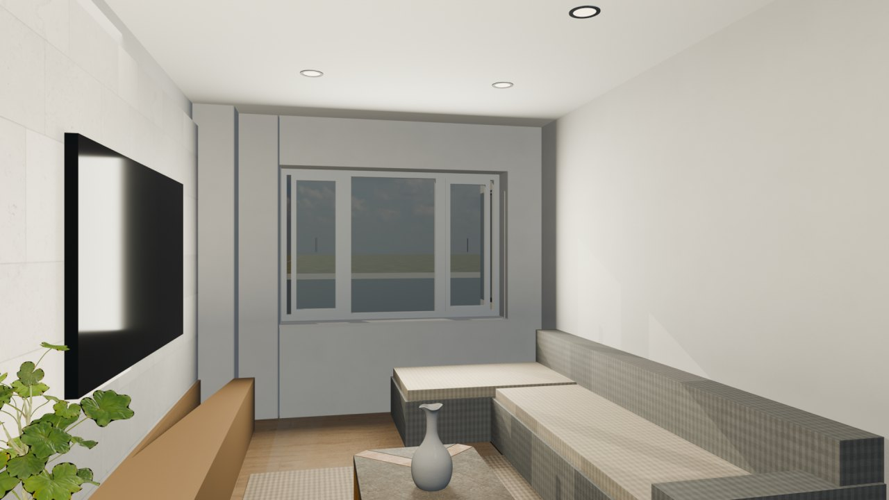
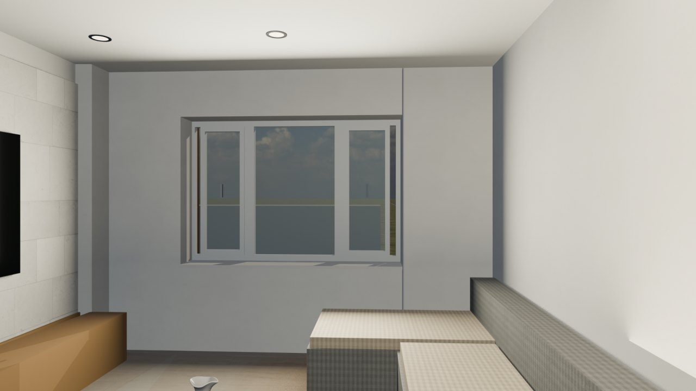
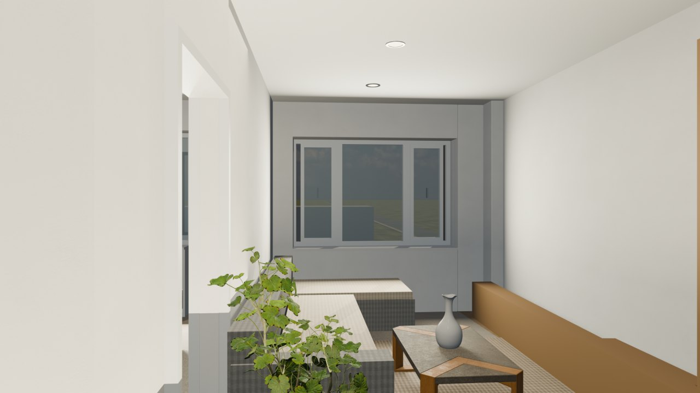
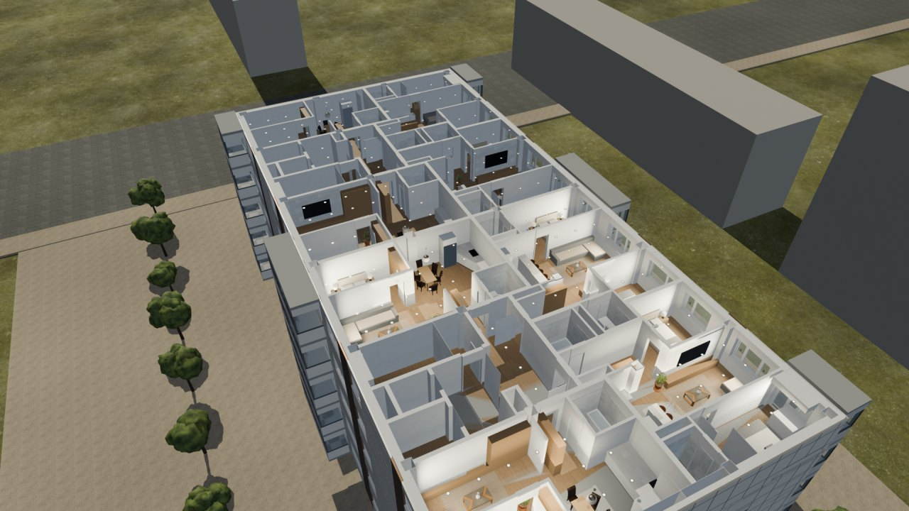
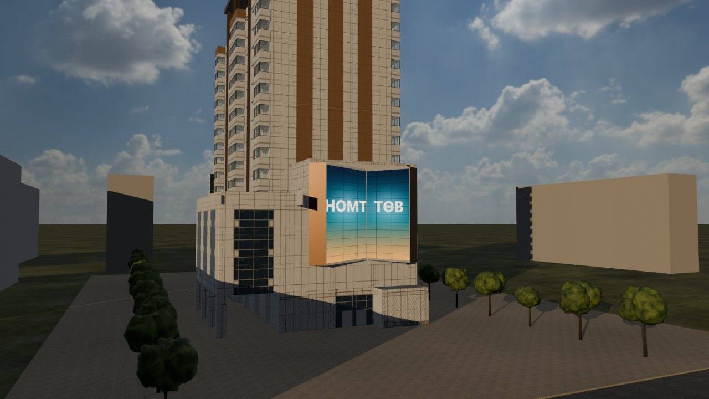
Camera paths are planned through the flats' free floor space and sampled every 5 cm against walls, furniture and open door leaves; every frame's view is also tested so the camera never stares into a wall.
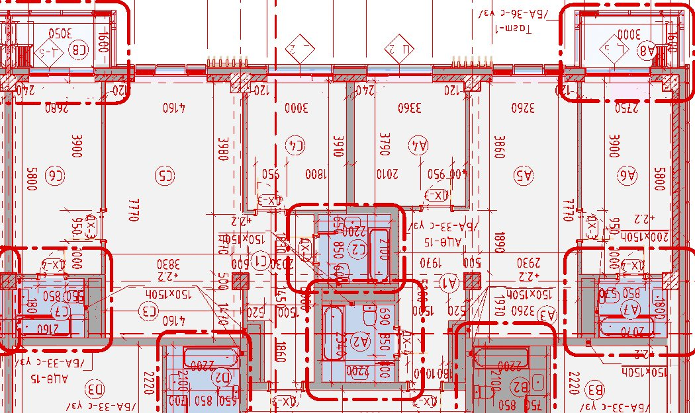
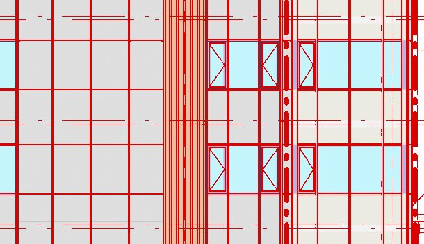
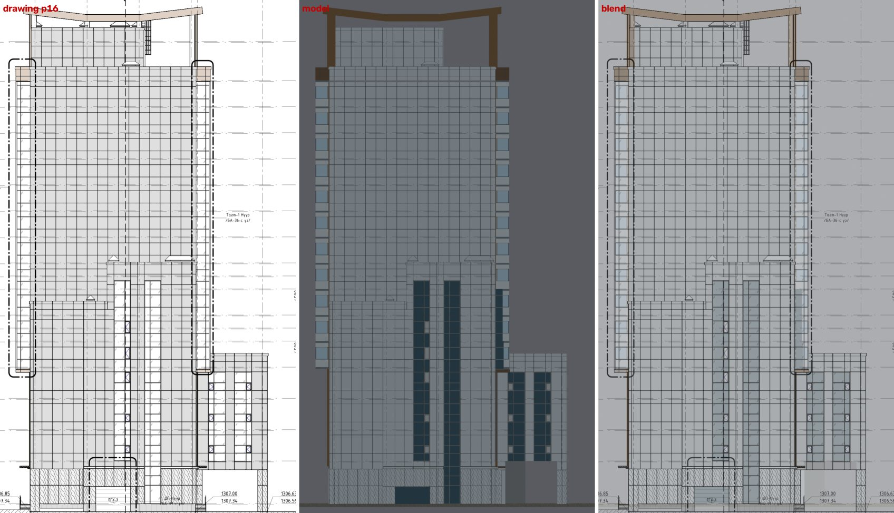
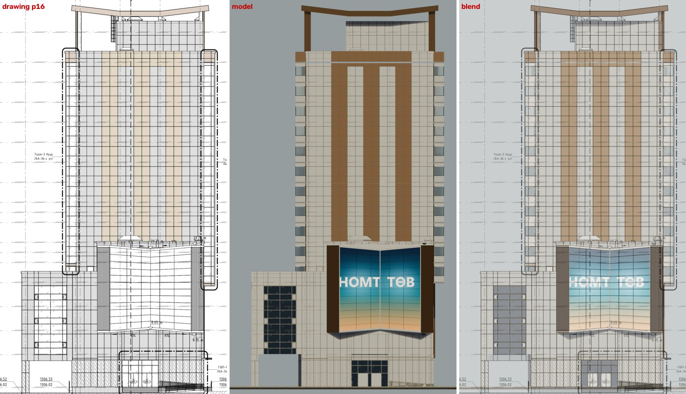
Full-size overlays: plan_overlay.jpg (whole floor) and elev_overlay_E.jpg (east face, floors 5–15).
| Type | m² | Rooms | Faces | Balcony | Balcony door-window | Living window | Bedroom window | Doors |
|---|---|---|---|---|---|---|---|---|
| A | 74.32 | 3 | West | Тагт-1 | Ц-3 · head 2.40 | 3-part · 0.87–2.34 | Ц-2 · 2000×1400 | 1 + 2 + 2 |
| B | 59.54 | 2 | East | Тагт-1 | Ц-3 · head 2.40 | 3-part · 0.87–2.34 | — | 1 + 1 + 1 |
| C | 79.29 | 3 | West | Тагт-2 | Ц-4 · head 2.30 | 3-part · 0.87–2.34 | Ц-2 · 2000×1400 | 1 + 2 + 2 |
| D | 68.71 | 2 | East | Тагт-2 | Ц-4 · head 2.30 | 3-part · 0.87–2.34 | — | 1 + 1 + 1 |
| E | 74.55 | 3 | West | Тагт-1 | Ц-3 · head 2.40 | 3-part · 0.87–2.34 | Ц-2 · 2000×1400 | 1 + 2 + 2 |
| F | 60.10 | 2 | East | Тагт-1 | Ц-3 · head 2.40 | 3-part · 0.87–2.34 | — | 1 + 1 + 1 |
| G | 79.29 | 3 | West | Тагт-2 | Ц-4 · head 2.30 | 3-part · 0.87–2.34 | Ц-2 · 2000×1400 | 1 + 2 + 2 |
| H | 68.70 | 2 | East | Тагт-2 | Ц-4 · head 2.30 | 3-part · 0.87–2.34 | — | 1 + 1 + 1 |
Doors are entrance ДХ-2 (1050) + bedroom ДХ-3 (950) + WC ДХ-4 (850). Living windows: casement | fixed | casement, heights in metres above the floor. Balconies are enclosed, 3.0 × 1.6 m clear, glazed 0.89–2.31 m over a parapet. Floor 15's living windows are drawn 0.135 m taller; the model follows that.
Drag to orbit the furnished typical floor (floors 8–15 layout, all 8 flats). Files are in the project folder:
deliverables/3d/nomt.blendFull scene: tower floors 5–15 as instances, floor 9 furnished, podium, crown, site, lightsdeliverables/3d/nomt-building.glbWhole building + site, Draco-compressed (5.2 MB)deliverables/3d/nomt-typical-floor.glbFurnished typical floor, Draco (0.5 MB); uncompressed copy used heredeliverables/video/Walkthrough film nomt-walkthrough.mp4 (1080p) and nomt-walkthrough-4k.mp4 (AI 4K upscale)extract_openings.py).extract_dxf.py, verify_sources.py).scene_spec.py, furniture_spec.py, massing_spec.py).blender_build.py, overlay_check.py).shots.py, render_shots.py, edit_video.py).The film itself is the Blender render. Higgsfield was used only to upscale it to 4K (Topaz) — the frames still come from the model, so windows and doors cannot drift. A photoreal AI restyle of the approach was tested and kept out of the film: trees popped in and the surrounding city was invented.